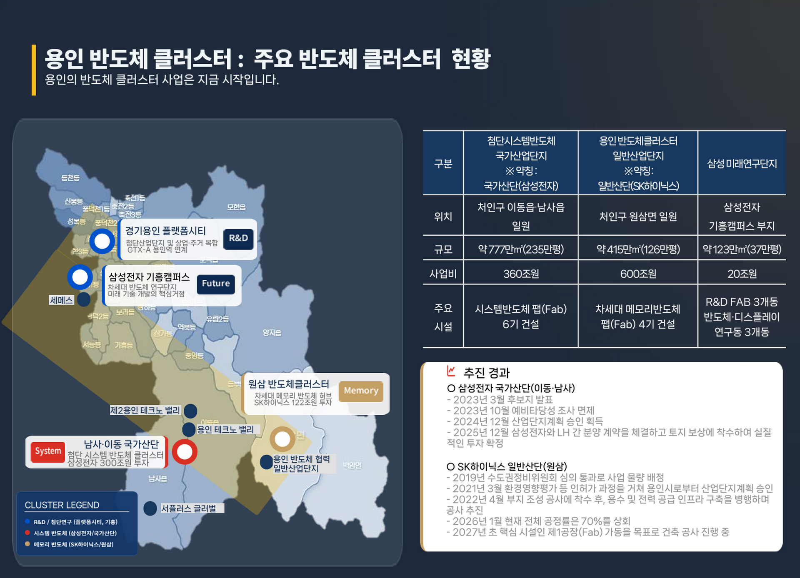

용인 반도체클러스터
배후 생활권, 도보 3분 거리
입지 검토 자료
용인 반도체클러스터 주요 출입 동선 인근, 전체 면적 중 약 0.8% 수준인 일반상업용지 검토 자료입니다. 아래 수치는 검토를 돕기 위한 참고 자료이며, 정확한 수치는 공식 자료 확인이 필요합니다.
검토 요약
용인 반도체클러스터 위치 분석
E2-1·E2-2 상업시설용지는 용인 반도체클러스터 주요 출입 동선과 인접한 배후 생활권으로, 기업숙소·직원숙소 검토 시 위치 이해가 중요한 구간입니다.



본 이미지는 공개 웹자료 및 현장 홍보자료를 기반으로 위치 이해를 돕기 위한 참고 이미지입니다. 세부 위치, 공급 조건, 일정은 상담 시 최신 자료 기준으로 확인됩니다.
상업용지 희소성 검토 (참고)
산업단지 전체 면적 중 일반상업용지의 비중을 인근 신도시와 비교한 참고 자료입니다. 비교 수치는 참고용이며 정확한 수치는 각 지구 공식 자료를 확인하시기 바랍니다.
◈ 권역별 상업용지 비율 비교 (참고)
평택 고덕(4%)이나 동탄2(2.5%) 대비 원삼 클러스터(0.8%)는 상업지 비율이 낮은 편으로 검토됩니다. 정확한 수치는 공식 자료 확인이 필요합니다.
◈ 배후 인구 대비 기숙사 공급 (참고)
반도체클러스터 가동 시 유입이 예상되는 인력 규모 대비, 원삼면 일대 신축 주거 공급은 부족한 것으로 검토됩니다. 유입 인구 및 공급 수치는 확인이 필요한 예상치입니다.
배후 수요 검토
참고 데이터
SK하이닉스 본사 인력과 협력업체 종사자의 유입 규모를 기숙사 공급 계획과 비교한 참고 자료입니다. 아래 수치는 사업 계획 확정 전 예상치입니다.
본사, 협력사 및 유동 인구 합계 추정치
단지 내 계획 기숙사 수용 가능 규모 추정치
단계별 인구 유입 전망 (참고)
* 공개 자료를 바탕으로 재구성한 참고용 추정치이며, 확정된 수치가 아닙니다.
수익률 시뮬레이션 (참고용)
대출 비율과 금리를 조정해 참고용 자기자본 수익률을 확인할 수 있습니다. 실제 조건과 다를 수 있으며 수익을 보장하지 않습니다.
분양가 2억 2,500만 원(참고),
월세 115만 원(보증금 500만 원, 인근 시세 참고)
기준 참고용 추정치입니다.